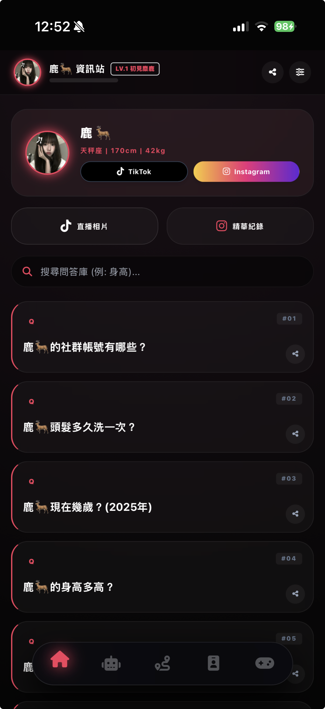

動態 Q&A 檢索系統
設計了直覺的搜尋介面，讓粉絲能透過關鍵字快速查詢與主播相關Q&A資訊，大幅降低管理員的重複回答負擔。
以「手機優先 (Mobile-First)」為核心設計理念，這是一個為鹿🦌量身打造的沉浸式 PWA 網站。將複雜的直播規則、常見問題與粉絲應援內容進行模組化整合，提供媲美原生 App 的流暢體驗。

設計了直覺的搜尋介面，讓粉絲能透過關鍵字快速查詢與主播相關Q&A資訊，大幅降低管理員的重複回答負擔。
透過程式碼渲染出專屬粉絲認證卡片，增強社群成員的歸屬感，並提供易於在社群媒體分享的視覺設計。
採用底部導覽列設計，符合行動裝置單手操作習慣。並透過漸進式網頁 (PWA) 技術，讓網頁具備離線瀏覽與快速開啟的能力。
> 穩定性優化： 針對不同手機螢幕解析度進行全面適配，確保 RWD 零跑位。
> 性能優化： 圖片採用 WebP 格式壓縮，首屏載入時間控制在 1.5s 以內。
> 功能更新： 新增「精華紀錄」區塊，讓粉絲能夠快速連結到管理員的帳號，查看精華與直播照。
$ _